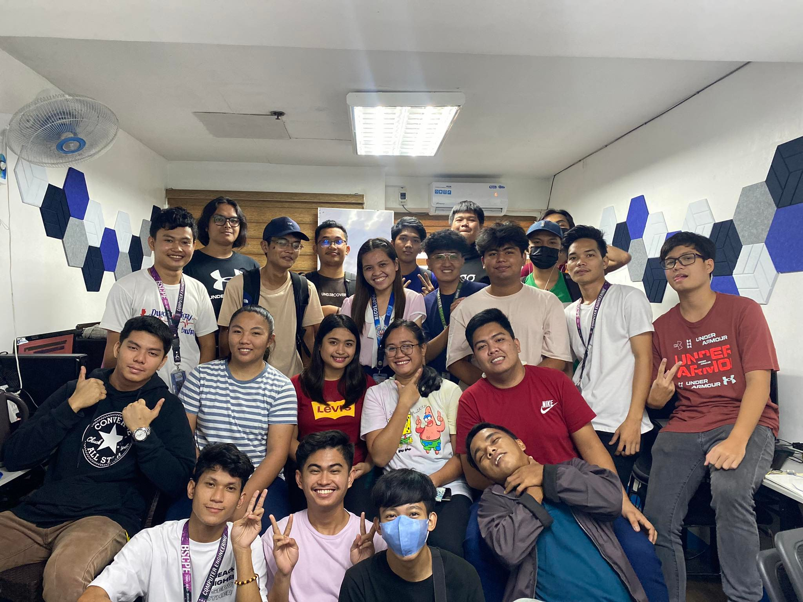
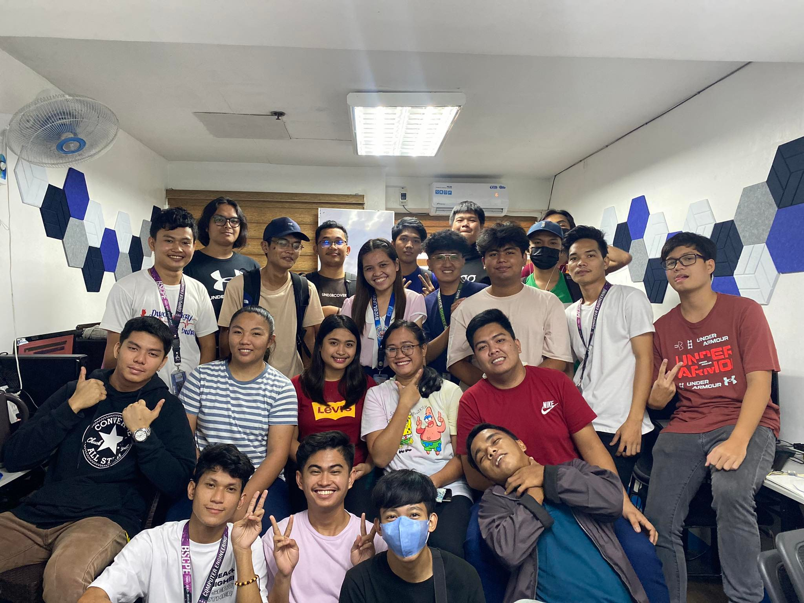

Open Book


Fledgling No More
As I saw in my student portal that there will be an internship in my program, I am consumed with different emotions. I felt enthusiasm and anxiousness in my nerves. “What if I cannot do this? What am I supposed to do during the internship? What company should I apply for?”. These questions keep roaming in my head.
Days passed and I got an interview for the internship I applied for. My hands are shaking, I’m very nervous even though I practiced for the interview. Luckily, I passed the interview and only a few steps need to be done in order for me to start my 1st day as an intern. Oh, wait I forgot to mention that I reside in Bulacan and the company I went to is from Makati. The distance from my home to the company is miles away, so I needed to find an apartment near my job. Finding a low-priced apartment is very hard. I remember expending two days just finding my apartment. It is mentally and physically exhausting.
This whole apartment thing is new to me. I will be away from my family; from now on, I’ll have to rely on myself for cooking, cleaning, and other household chores. Now that I’ve moved into my apartment, I immediately arrange my things. I can also recall my first dinner in my apartment, I do not have kitchenware so I roam around the area near my apartment looking for food. A couple more days and I got used to living in my apartment, I even goes to the gym from time to time. Thinking back, being separated from what you are used to and exploring new things and opportunities was not a bad thing. This whole new experience will be a milestone for me. What I’ve experienced living on my own will be my guidance as I step in the corporate world.
 

Entering the corporate world
I barely slept last night. I’m nervous about what might happen during my first day as an intern. As the sun shows up, I immediately get out of my bed, took a bath, and eat breakfast. Since the distance from my apartment to the company is near, all I need is to walk. As I take steps, I am still anxious, my hands are shaking and my palms are sweating. With too much worrying, I didn’t even realize I’m in front of the company building. I took a big sigh, pat myself, and whispered, “All is well”. Finally, I’m at the doorstep of the company, I opened the door, and in front of me are the employees and fellow interns. Some are drinking coffee while some are doing their tasks. I greeted the admin and she gave me a form in which I put my credentials and she also gave a brief orientation about the company. And that’s all that happened during the morning.
During lunch, with my fellow interns, we are given tasks. Unfortunately, I barely have knowledge of the task given to me. Luckily, my seniors are approachable and they are friendly. They guided me and give me tips on how I can finish the task given to me. The working environment of the company is warm and every single of them is lovely. They always put smiles on their faces when talking. When the shift is always over, the entire place is filled with joy and laughter because apparently, they always play mobile games against each other. There are friendly taunts and noises, they also let the new interns join the game. They made us feel welcome.
To be honest, I have a “bad” connotation with regard to workmates and company. But what I have experienced in Erovoutika is one of a kind. This internship will always be a milestone for me. What I encountered in the company is something that I haven’t thought of, but I am pretty happy on what it turns out to be.